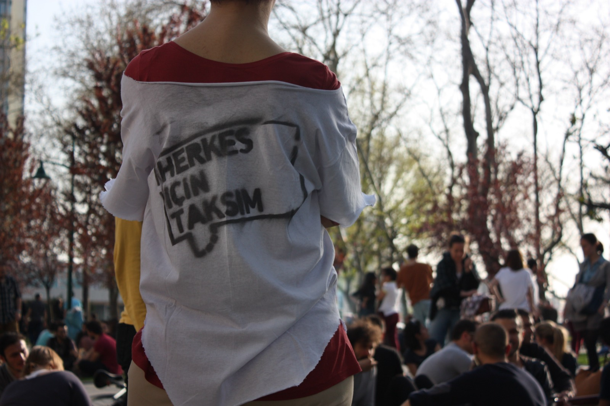

2012 · Workshop · Gezi Park, Istanbul
Geleneksel Gezi Parkı Şenlikleri (Gezi Park Celebrations)
Series of picnic-festival gatherings in Gezi Park, launched by Herkes İçin Mimarlık in March 2012 against the Taksim Square project; the first on 4 March 2012 followed a workshop 'Herkes İçin Taksim' on 26 February 2012 at Mimar Sinan Fine Arts University.
- No.
- 1210
- Date/s
- 2012
- Type/s
- Workshop
- For
- Herkes İçin Mimarlık Derneği
- Place
- Gezi Park, Istanbul
- Role
- co-founder of the association; individual role in this series not stated
- Status
- realised
